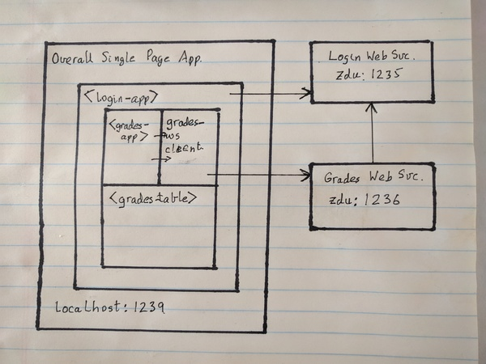

Project 4
Due: May 6 before midnight
Important Reminder: As per the course Academic Honesty Statement, cheating of any kind will minimally result in your letter grade for the entire course being reduced by one level.
This document first describes the aims of this project followed by a brief overview. It then lists the requirements as explicitly as possible. It describes the files with which you have been provided. Finally, it provides some hints as to how the project requirements can be met.
Aims
The aims of this project are as follows:
To expose you to HTML custom elements.
To familiarize you with the fetch() API.
Requirements
You must push a submit/prj4-sol directory to your github repository such that typing npm ci within that directory followed by npm run start will start a web server on localhost at a default port, usually 1239. This server should provide access to a single-page app which provides access to the grades data from your earlier projects.
Pointing a browser to http://localhost:1239 should start the app and display a login prompt.
If a user logs in successfully using a particular loginId, then the app should transition to displaying a list of courses accessible to that loginId (there may only be one).
If the user clicks on a particular course, then the app should display the grades and stats for that course. The app should only display those grades and stats which are accessible to the currently logged in user.
The app will access all grades using the web services developed for your previous project. The app will be based on three custom elements:
- <login-app>
An element which can wrap an arbitrary app.
- <grades-app>
The main grades app which makes calls to the web service to obtain the grades accessible to the currently logged-in user.
- <grades-table>
This element is used to simply display a grades table.
You are being provided with complete code for both the <login-app> and the <grades-app>. You need to provide the code for accessing the remote web services and the code to implement the <grades-table> custom element.
The contents of the displayed table should be sorted by emailId.
Rows having empty emailId's should sort stably at the bottom.
A working version of this app will be demo'd in class. You can view the demo again while working on the project using the zoom recording.
External Servers
This app will depend on two external servers:
- Login Web Services
This server is running on . It is preloaded with authentication and authorization for all entries in people.jsonl. All these entries have been setup as students with read-only access. Additionally, there are two additional logins:
- cs471
Read-write access to all cs471 grades.
- cs544
Read-write access to all cs544 grades.
The password for all logins has been set to asdf.
- Grades Web Services
This server is running on . This are essentially the same as what was implemented for Project 3 except for the following changes:
Authentication and authorizations are checked for each request using the login web services.
Specifically, every request must have a sessionId query parameter specifying a currently logged-in session. A request is rejected with a 401 UNAUTHORIZED status if it does not have such a query parameter or the specified session is invalid or does not have sufficient authorization for the requested action.
The server supported https.
The overall system architecture is shown in the following figure:
parcel.js
This project will deliver multiple files to the browser. It is convenient to bundle all these files together. Webpack is the tool commonly used for bundling within the JavaScript community. Parcel.js is another tool with the advantage that it can be used with zero configuration.
Parcel comes with a development server which supports hot module replacement which makes development much more convenient.
Provided Files
The prj4-sol directory contains a start for your project. It contains the following files:
- grades-ws.mjs
A skeleton file for the web services client. You will need to modify this file.
- grades-table.mjs
A skeleton file for the grades table component. You will need to modify this file.
- grades-app.mjs
The code for the grades table component. You will not need to modify this file.
- index.mjs
A file which imports component files and registers custom elements with the DOM.
- index.html
The entry point to the application.
- README
A README file which must be submitted along with your project. It contains an initial header which you must complete (replace the dummy entries with your name, B-number and email address at which you would like to receive project-related email). After the header you may include any content which you would like read during the grading of your project.
Additionally, libraries have been added to the lib directory since your last project:
- login-app
The login app which allows an arbitrary app to be protected by a login.
- grades-ws
The code for the grades web services server.
- cs544-js-utils
Utilities which can be used in any JavaScript environment. Currently, it only contains a module for collecting errors.
- cs544-node-utils
Utilities which can be used only with a nodejs environment.
- courses-info
Relatively minor changes to facilitate enumerating the courseId's for all supported courses.
The emailId for one student in the *10*json* in the data directory has been changed to ensure that there is at least one student in both cs471 and cs544.
Hints
The following points are worth noting:
Parcel's development server with hot module replacement coupled with Chrome's debugger makes the development experience reasonably pleasant.
Parcel's HMR is not 100% reliable. If you are getting errors which do not make sense, it is probably a good idea to stop the parcel server, clean out the .cache and dist directories and restart with a clean slate.
The following loginId's are useful for testing:
- skeene
A student account having read-only access to both cs471 and cs544.
- bwarms
A student account having read-only access to only cs471.
- ajohan
A student account having read-only access to only cs544.
- cwinst
A student account having no access to any of the courses.
- cs471
A instructor account having read-write access to all CS 471 grades.
- cs544
A instructor account having read-write access to all CS 544 grades.
Note that until you implement the student web services, all student accounts will have access to all courses.
All passwords have been set to asdf.
The following steps are not prescriptive in that you may choose to ignore them as long as you meet all project requirements.
Read the project requirements thoroughly. Look at the zoom video of the class demo to make sure you understand the necessary behavior. Review the material covered in class including the browser technologies as well as the silly-app example covered in class. In particular, look at the silly-app.mjs for an example of writing a custom HTML element.
Also, look at the implementation in login-ws.mjs for an example of building web services using the fetch() API to access login web services.
Note that this project assumes an error architecture similar to your previous projects, rather than the more complex one given in the user-ws example. Specifically, an object is in error if it has an errors property.
Familiarize yourself with the functionality provided by courses-info library as you will need to use this library directly in your project.
Set up your prj4-sol branch and submit/prj4-sol as per your previous projects.
Initialize your package.json using the npm init command and install necessary modules. Minimally, you will need the following:
$ npm install ~/cs544/lib/cs544-* ~/cs544/lib/login-app \ ~/cs544/lib/courses-info $ npm install -D parcel-bundlerThe last line installs parcel as a development dependency as it is only used for packaging your app together at development time and is not needed at runtime.
Modify your package.json by adding in a browserlist top-level property:
"browserslist": [ "since 2020-12" ],and the following before the "test" line:
"start": "parcel src/html/index.html --port 1239",
You should now be able to start a parcel development server:
$ npm run start
If you point your browser to http://localhost:1239 you should see the app.
Fire up Chrome's debugger using F12. The three tabs I find the most useful are:
- Elements
To examine the generated HTML.
- Console
To look at error messages.
- Sources
To set breakpoints in the code.
You should keep the debugger open throughout development.
Login to the app using one of the loginId's listed above. Out of the box it allows you to login, click on a course applicable to the user and see JSON dumps of the information injected in to the grades table component. In particular, you will notice that the JSON dumps have placeholder data for the actual grades.
Remedy the problem by editing grades-ws.mjs to implement the grades() and student() client wrappers for the corresponding web services.
Recollect that using fetch() usually involves two asynchronous calls:
A call to get the Response object. This call throws only on network errors. You can check for an unsuccessful HTTP status by using the ok property.
A call to access the body.
Implementing these wrappers is particularly simple:
Both wrappers merely do a GET to different URL's. So you can factor out the common logic.
The remote web services are set up to return JSON on both success and failure; in the latter case, the response will contain an errors object.
The URLSearchParams is useful for converting query parameters from an object to a properly encoded query string.
You can use login-ws.mjs as an example of a fetch()-based web service client.
Make sure that the return value from these calls returns an errors object on both exceptions as well as unsuccessful web service requests.
Test to ensure that your JSON dump now shows returned grade data for both student and instructor logins.
Add code to grades-table.mjs to display the course name as a <h2> heading injected into the shadowRoot's innerHTML. You will find the name data in the courseInfo object.
Add code to grades-table.mjs to format the grades data as a table.
Sort the table rows by emailId as per the requirements.
Make one pass over the data, collecting all column ID's. Ensure that you do not disturb the order in which they are encountered in the data.
Output the table tags to the component's innerHTML. To ensure that the provided styles apply, ensure that the table data is within a HTML container which has class grades #
Iterate until you meet all requirements.
It is a good idea to commit and push your project periodically whenever you have made significant changes. When complete, please follow the procedure given in the git setup document to merge your prj4-sol branch into your main branch and submit your project to the TA via github.